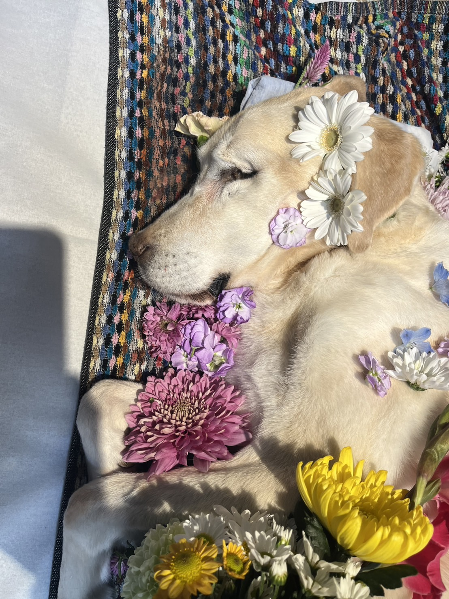

IN LOVING MEMORY · 2025.12.03
キナコ、ありがとう。
ラブラドール・レトリバーの女の子 · 15歳


長い間、家族を愛してくれて、ありがとう。
家族をたくさん笑わせてくれて、ありがとう。
いつも賑やかにしてくれて、ありがとう。
15年間、一緒に過ごした日々は、
家族みんなの大切な宝物です。
キナコ、ずっと忘れないよ。
2025年12月3日 · 家族みんなより
← ほかの日記を見るIN LOVING MEMORY · 2025.12.03
ラブラドール・レトリバーの女の子 · 15歳

長い間、家族を愛してくれて、ありがとう。
家族をたくさん笑わせてくれて、ありがとう。
いつも賑やかにしてくれて、ありがとう。
15年間、一緒に過ごした日々は、
家族みんなの大切な宝物です。
キナコ、ずっと忘れないよ。
2025年12月3日 · 家族みんなより
← ほかの日記を見る